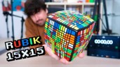
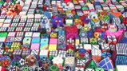
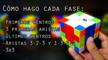

En esta sección, te brindamos algunos videos que te ayudarán a saber más acerca de este artefacto y sus asociados
LI NK DEL VIDEO |
TUTORIALES |
 |
TUTORIAL 15X15 |
 |
FASES DE ALGORÍTMOS |
TIPOS POR COLECCIÓN DE CUBOS RUBIK |
|
 |
CANAL CUBY CUBOS Y MAS CUBOS |
PRACTICAS PARA ARMAR LOS CUBOS |
|
|
|
CANAL "JS" CUBOS AL CUADRADO |